7 Root finding
Root finding is a fancy name for a very common task in mathematics: solving an equation. Any equation can be written in the form \(f(x) = 0\), for a suitable function \(f\), and then solving the equation means finding a zero of \(f\). A root is just an alternative name for the zeros of a function, that you already know from studying the roots of polynomials.
We are going to study algorithms for root finding. From a mathematical perspective, we would like to build a sequence that converges t to the root of a given function \(f\).
Note that in the context of MATH245, when we talk about “solving an equation” or “finding a solution” or “finding a fixed point”, it is always in the sense of approximating the solution with a computer program.
7.1 Fixed point iteration
We can always rephrase a root finding problem \(f(x) = 0\) to a fixed point problem! Let \(g(x) = f(x) + x\). Then \[ f(x) = 0 \Longleftrightarrow g(x) = x. \]
We can apply the approaches from Chapter 6, and we are done! Let’s start with a familiar example. Find a solution of the equation \[ \cos(x) - x = 0. \] We can rewrite this problem as find a fixed point of the function \[ g(x) = \cos(x). \] We can use the same code we used last week, for example:
We can check that \(x\) satisfies the desired equation.
Are we done? Well, we have a method to find roots, but is it a good method?
7.2 Newton’s method
Most possibly you have encountered Newton’s method in the past. Rather than just presenting a formula, let’s start by framing Newton’s method in the context of fixed point methods. Let’s assume we are interested in solving the equation \(f(x) = 0\). Rather than using \(g(x) = f(x) + x\), we can define \[ g(x) = x + f(x)h(x). \] Now I have a choice in the function \(h\). Note that we still have \[ f(x) = 0 \Leftrightarrow g(x) = x, \] so any choice of \(h\) gives us a fixed point. What is the best choice of \(h\)? Newton’s method corresponds to \[ h(x) = - 1 / f'(x). \]
The natural question is what method converges faster to a zero of \(f\), \[ g_1(x) = x + f(x) \] or \[ g_2(x) = x - f(x)/f'(x)? \] Let’s do a quick experiment. Let’s consider, as before \(f(x) = \cos(x) - x\). Let’s do fixed point iteration in both cases.
R
# Define our function f and f'
f <- function(x) cos(x)-x
fp <- function(x) -sin(x) - 1
#Define both methods
g1 <- function(x) x + f(x)
g2 <- function(x) x - f(x)/fp(x)
# Define initial point x_0.
x1 <- 0.1 #for the first method
x2 <- 0.1 #for the second method
#Lists to save the points
n <- 20 #Number of iterations
r1 <- numeric(n)
r2 <- numeric(n)
for(i in 1:n){
x1 <- g1(x1)
x2 <- g2(x2)
r1[i] <- x1
r2[i] <- x2
}Python
# Importing the numpy module
import numpy as np
# Define our function f and fp
def f(x):
return np.cos(x)-x
def fp(x):
return -np.sin(x)-1
# Define our fixed point methods
def g1(x):
return x + f(x)
def g2(x):
return x - f(x)/fp(x)
# Define initial point x_0.
x1 = 0.1 #for the first method
x2 = 0.1 #for the second method
# Lists to save the points
n = 20
r1 = np.empty(n) #empty list of n elements
r2 = np.empty(n)
for i in range(n):
x1 = g1(x1)
x2 = g2(x2)
r1[i] = x1
r2[i] = x2We plot r1 and r2 to assess convergence.
R
Python
from plotnine import *
import pandas as pd
point_plot = ggplot(pd.DataFrame({"x": range(n), "y1": r1, "y2":r2})) + \
geom_line(aes(x="x",y="y1"),color="blue") + \
geom_line(aes(x="x",y="y2"),color="red") + \
theme_minimal() + \
ylab("x_n") + \
xlab("n")
point_plot## <Figure Size: (640 x 480)>
We can clearly see that the second method (Newton’s method) is much faster! We will talk more about why Newton’s method is faster, and how can we actually define and measure “faster”, at the end of this Chapter.
Exercise: One of the main limitations of Newton’s method is that it requires us to compute and implement the derivative of \(f\). An alternative is to use the secant method, which one can derive by replacing \(f'(x)\) by an approximation of the form \[ (f(x) - f(y)) / (x-y). \] Write a fixed point method using this approximation for the derivative of \(f\), implement it, and compare it with the fixed point iteration and Newton’s method when applied to \(f(x) = cos(x) - x\). What method is faster? Hint: you will need to use the last two values in the sequence to approximate the derivate, so you will need a two-dimensional \(g\).
#Root finding in R and Python
R and Python have a suit of root finding methods. We will see examples here using the library nleqslv in R, and scipy in Python. Let’s see how to solve the same problem as before, finding a zero of \(f(x) = cos(x) - x\).
R
## $x
## [1] 0.7390851
##
## $fvec
## [1] 3.201369e-09
##
## $termcd
## [1] 1
##
## $message
## [1] "Function criterion near zero"
##
## $scalex
## [1] 1
##
## $nfcnt
## [1] 5
##
## $njcnt
## [1] 1
##
## $iter
## [1] 5Python
## converged: True
## flag: converged
## function_calls: 10
## iterations: 5
## root: 0.7390851332151607
## method: newtonAs you can see, both methods return information about the process. Of particular interest are the convergence result (true or false), the number of iterations that the method performed and of course, the approximation for the root of \(f\).
We are just using all the default options, but these functions actually allow us to select the method, the convergence criterion, specify the derivative. They are also available for functions higher dimensions. For example, we can use Newton’s method.
R
library(nleqslv)
f <- \(x) cos(x) - x
fp <- \(x) -sin(x) - 1
x0 <- 0.1
nleqslv(x0,f,fp,method="Newton")## $x
## [1] 0.7390851
##
## $fvec
## [1] -1.725253e-11
##
## $termcd
## [1] 1
##
## $message
## [1] "Function criterion near zero"
##
## $scalex
## [1] 1
##
## $nfcnt
## [1] 4
##
## $njcnt
## [1] 4
##
## $iter
## [1] 4Python
import scipy as sp
f = lambda x: np.cos(x) - x
fp = lambda x: -np.sin(x) - 1
x0 = 0.1
sp.optimize.root_scalar(f,x0=x0,fprime=fp,method="Newton")## converged: True
## flag: converged
## function_calls: 10
## iterations: 5
## root: 0.7390851332151607
## method: newtonNote that the internal implementation and default values in R and Python are different, even when applying the same method. In this case, the R method stops by default when \(f(x) < 1.e-8\) (check ftol in the documentation of nleqslv), whilst the Python implementation uses stopping criteria xtol and rtol, similar to the fixed point controls we defined in Chapter 6 on the absolute and relative difference of the last two iterates.
Exercise: Explore the other methods implemented in R and Python. Do they all require implementing \(f'\)? Are the methods slower if \(f'\) is not defined? Check the documentation for nleqslv or root_scalar to find more details.
7.3 A note on convergence
There is a mathematical definition of convergence rate that allows us to compare methods. Convergence can be defined in general for any sequence. Consider a sequence \(x_n \to x^\ast\) as \(n \to \infty\). Suppose that for all \(n =0, 1,\dots\), \(x_n \neq x^\ast\). Let \(\epsilon_n = x_n - x^\ast\), the error in using \(x_n\) to approximate \(x^\ast\). If there exist positive constants \(\lambda\) and \(\alpha\) such that \[ \lim_{n \rightarrow \infty} \frac{|x_{n+1} - x^\ast|}{|x_n -x^\ast|^\alpha}= \lambda \] then we say that \(x_n \to x^\ast\) with order \(\alpha\) and asymptotic error constant \(\lambda\).
Two special cases are:
- If \(\alpha =1\) (and \(\lambda <1\)), the sequence is linearly convergent.
- If \(\alpha =2\), the sequence is quadratically convergent.
For the fixed point iteration in Chapter 6, using the contraction mapping theorem, we have theorem to characterise the convergence.
Theorem: Suppose that \(g:[a,b] \to [a,b]\) is a contraction mapping. For \(x_0 \in [a,b]\) define the sequence \(x_0, x_1, \dots\), by \(x_n = g(x_{n-1})\), \(n=1,2,\dots\), and let \(x^\ast\) be the unique fixed point of \(g\) in \([a,b]\) (from the contraction mapping theorem).
- If \(g\) is continuously differentiable with \(g'(x^*) \neq 0\), then \(x_n \to x^\ast\) linearly, with \(\lambda = |g' (x^*) |\).
- If \(g\) is twice continuously differentiable with \(g' (x^*)=0\) and \(g''(x^*) \neq 0\), then \(x_n \to x^*\) quadratically with \(\lambda = |g''(x^*)|/2\).
Exercise: Prove the previous theorem. Hint: Note that the contraction mapping theorem gives an expression for the distance between the \(n-th\) iterate and the fixed point, exactly what we need in the definition of convergence.
Exercise: Assume we are applying the Newton’s method to find a root of a function \(f\). Apply the previous theorem to show that the Newton’s method has quadratic convergence if \(f'(x) \neq 0\).
The secant method has a convergence rate 1.62 (approximately). We can use the convergence rates to compare the methods: the standard fixed point iteration has (in general) a linear convergence rate (that is, \(\alpha=1\)), the secant method a convergence rate of 1.62, and Newton’s method a convergence rate of 2.
Exercise: Evaluate 100 iterations of the standard fixed point method, Newton’s method and secant method (if you have implemented it), for the function \(f(x) = cos(x) - x\). Use the last iteration as the “true” value of the fixed point. Plot the log-error of each iterate, that is \(\log(|x_n - x^\ast|)\) for each method. What does this represent in terms of convergence rates?
7.4 A note on Newton’s method.
There is an alternative (and useful!!) alternative derivation of the Newton’s method. It requires the Taylor expansion of a function. Consider a function \(f\), that we assume is smooth (it has as many derivatives as we need). We would like to solve \[ f(x) = 0. \] We start at a value \(x_0\), and we are looking for \(x_1\) such that \(f(x_1) = 0\). We can write: \[ 0 = f(x_1) = f(x_0 + (x_1 - x_0)). \] If we assume that \(x_1-x_0\) is small, we can use the Taylor expansion of \(f\) about \(x_0\).
Challenge: Use the Taylor expansion up to order one, and isolate \(x_1\) to find expression for Newton’s method. Could we derive higher order methods in this manner?